2.3: Conditional probability
Stat50 ex Contingency Table.pdf
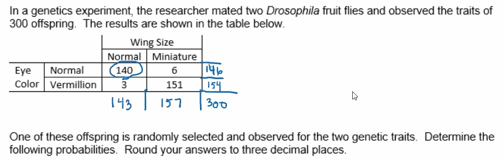
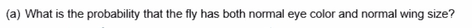
P(normal eye and normal wing)=140300=.467
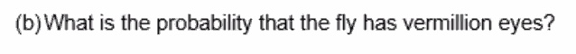
P(vermillion eyes)=154300=.513
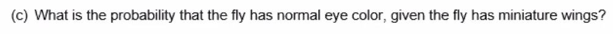
P(normal eye | mini wings)=6157=.038
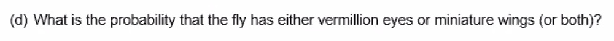
P(vermillion eyes or mini wings)=151+3+6300=.533
Another way to think of it (using the general addition rule):
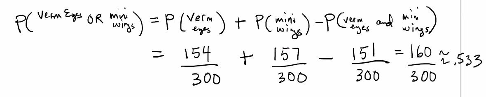
Conditional probability definition:
The probability that event B occurs given that event A occurs is called conditional probability. This is denoted:
P(B∣A)
A conditional probability is a probability that is based on a part of the sample space. (An unconditional probability would be based on the entire sample space.)
Let A and B be events with P(B)≠0. The conditional probability of A given B is:
P(A∣B)=P(A∩B)P(B)

In other words: B now becomes the sample space!
Regarding that last example, part c could be figured out like this:
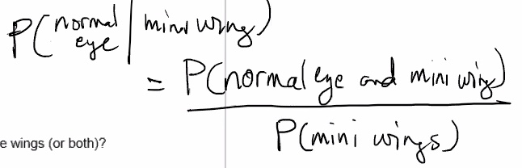
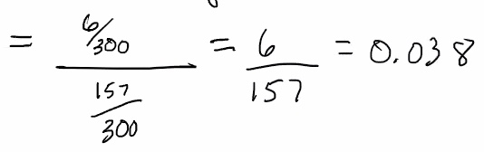
e.g.

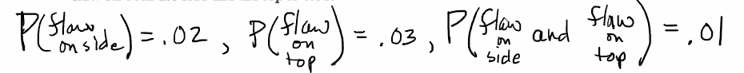
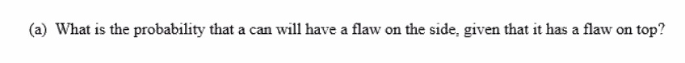
P(flaw on side∣flaw on top)=P(flaw on side and flaw on top)P(flaw on top)=.01.03≈.333
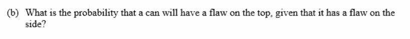
P(flaw on top∣flaw on side)=.01.02=.5
Independent events
Stat50 2.3 Independent Events.pdf
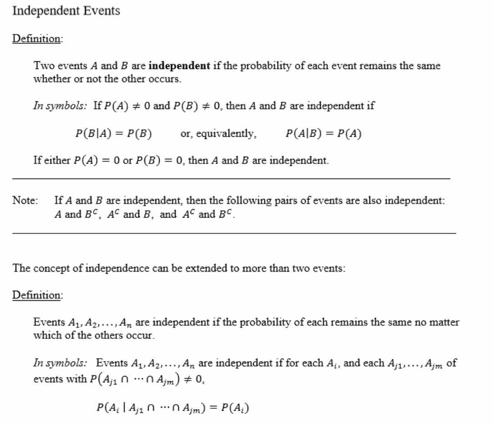
e.g.
Consider the experiment of randomly selecting one card from a deck of 52 playing cards. Let
FKH=event a face card is selected=event a king is selected=event a heart is selected
P(K)P(K∣F)P(K∣F)=452≈0.077=412≈0.333≠P(K)
So, K is not independent of F. The percentage of Kings among face cards (33.3%) is not the same as the percentage of Kings among all cards (7.7%).
P(K∣H)=113≈0.077
Note:
P(K∣H)=P(K)
So, K is independent of the event H. The percentage of Kings among the hearts is the same percentage of Kings among all cards.
Multiplication rule
Stat50 2.3 Multiplication Rule.pdf
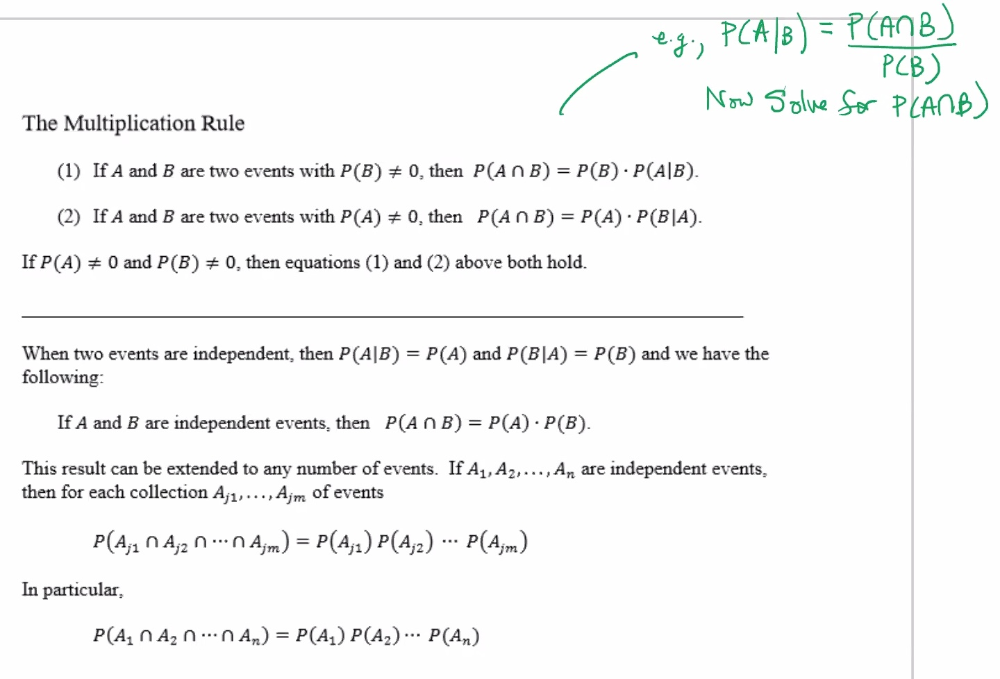
Remember:
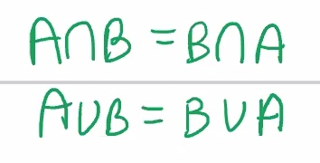
e.g.
An urn with 3 yellow balls and 4 green balls. Two balls are drawn in succession.
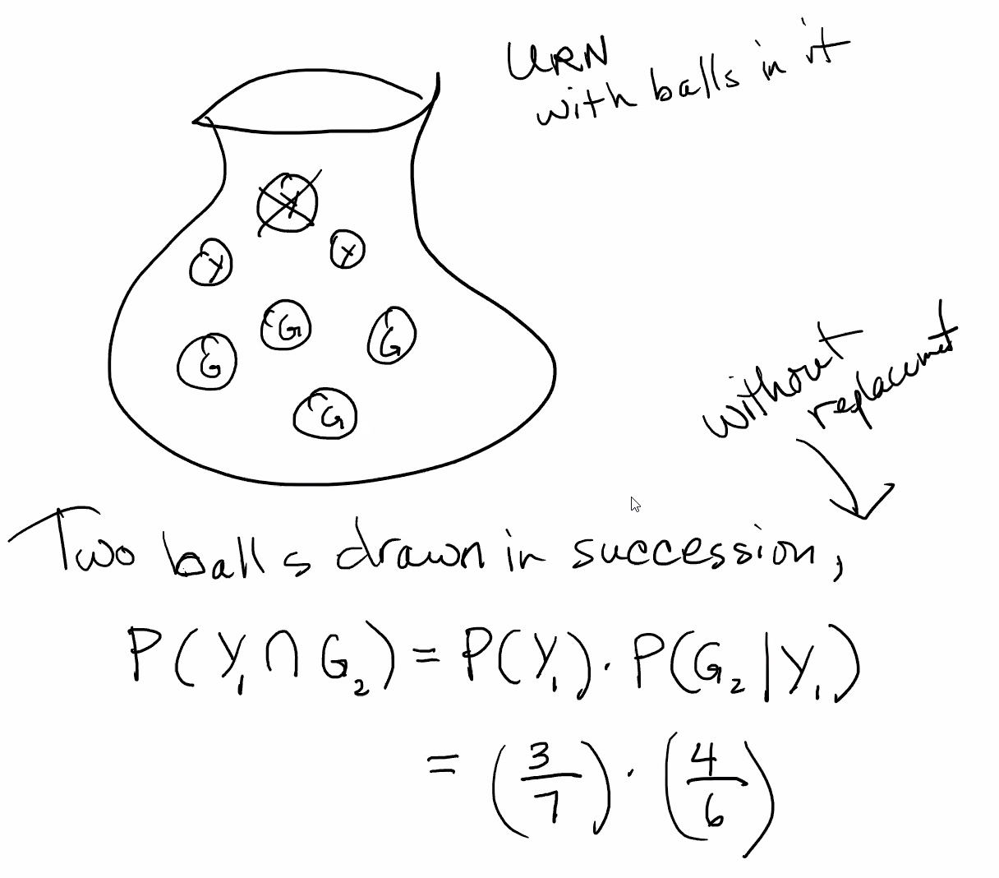